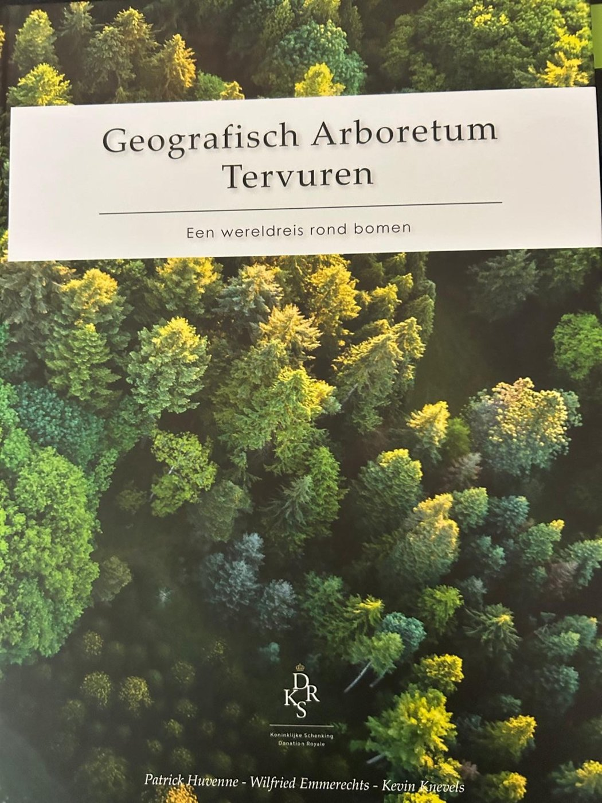
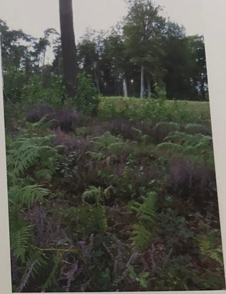
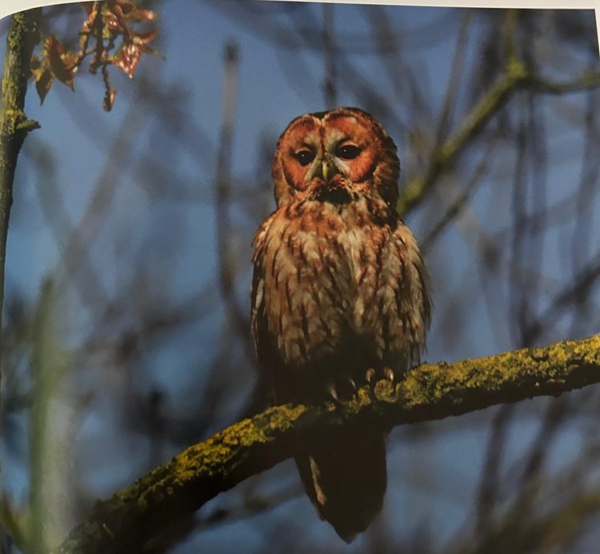
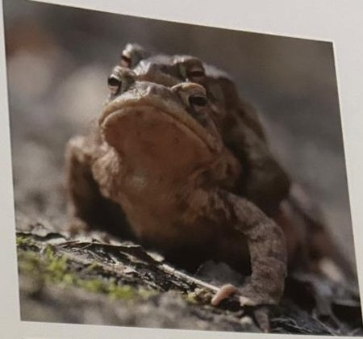
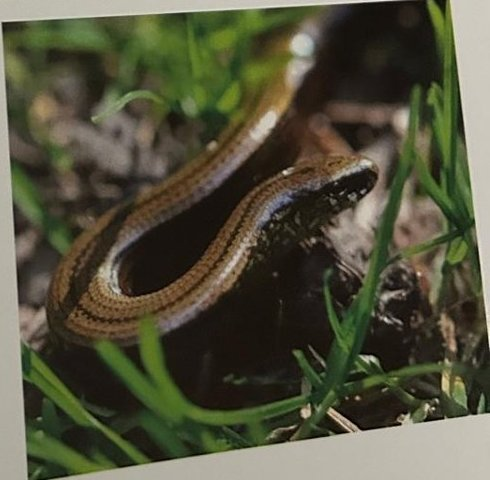

Het boek: een wereldreis rond bomen

Het standaardwerk over het arboretum, geschreven door de mensen die het beheren. Deze gidssite steunt er voor een groot deel op. Hieronder vind je een samenvatting in eigen woorden, hoofdstuk per hoofdstuk, en een korte typering van alle 40 groepen. Voor het volledige verhaal, de kaarten en de prachtige foto’s: lees het boek.
Waarover gaat het?
Het domein van de Koninklijke Schenking in Tervuren combineert drie dingen: een wereldvermaard arboretum, het Kapucijnenbos eromheen, en de ligging midden in het Zoniënwoud. Het boek vertelt hoe die drie samen ontstonden en hoe ze vandaag beheerd worden. Het arboretum telt meer dan 600 soorten en ongeveer 30.000 genummerde bomen en struiken op zo’n 120 ha. Het is geen bomentuin met een bordje bij elke stam, maar een landschapspark met kleine bossen: elke groep stelt een bostype voor uit de gematigde streken van het noordelijk halfrond.
Voorwoord en inleiding
In het voorwoord noemt Philippe de Spoelberch, erevoorzitter van de Belgische Dendrologische Vereniging, het arboretum een monument van wereldniveau. Van de ruim 300 bomen die zijn vereniging in Tervuren opmat, zijn er 33 nationaal kampioen. Amerikaanse bezoekers kregen tranen in de ogen bij de Amerikaanse kastanjes, die in hun eigen land bijna verdwenen zijn.
De collectie werd beschreven in catalogi van 1905, 1924, 1945, 1958, 1986 en nu 2020. Dit boek is geen catalogus: de soortenlijsten en kaarten staan online op arboretum-tervuren.be. Het boek wil vooral tonen wat je ziet als je door de groepen wandelt.
Deel 1. Over planten, bomen en boomverzamelingen
Een inleidend deel over wat een arboretum (en een silvetum, een bosarboretum) is, over het gebruik van exotische boomsoorten in de bosbouw, over plantensystematiek en naamgeving, over soortenrijkdom en verspreiding, over klimaat- en vegetatiezones en over bostypologie: de basis om de groepen te begrijpen.
Deel 2. Historiek: van Kolenwoud tot koninklijk arboretum
Het Zoniënwoud is een restant van het oude Kolenwoud. De hertogen van Brabant schreven er in 1371 al een boswetboek voor, en vanaf 1787 maakte Joachim Zinner er het beukenwoud van dat we nu kennen. Op de plek van het Kapucijnenbos stichtte aartshertogin Isabella in 1626 een klooster, dat in 1798 werd afgebroken; LIDAR-beelden tonen nog de sporen.
Leopold I kocht het bos in 1842 en liet het grotendeels ontginnen tot akkers voor pachters. Leopold II liet die akkers tussen 1880 en 1895 opnieuw bebossen en maakte er een jachtdomein van. In 1900 schonk hij zijn domeinen aan het land, "voor de komende generaties". In april 1902, nog vóór de staat de schenking aanvaardde, begon professor Charles Bommer met de aanleg van het arboretum, betaald door de Koning zelf. Daarna volgden regisseurs als Colleaux, Liénard en Huvenne, die de collectie uitbreidden, inventariseerden en verjongden.
Deel 3. Over het arboretum: een levende wereldkaart
Het idee paste in zijn tijd: België was rond 1880 het bosarmste land van zijn geschiedenis, en de bosbouw zocht snelgroeiende bomen. Tegelijk was het de tijd van de wereldtentoonstellingen en de verzamelwoede. Bommer wilde geen losse bomen tonen, maar bossen: welke bomen en struiken groeien in een bepaald stukje wereld samen, en hoe gedragen ze zich in Tervuren?
Het grondplan is een gedraaide wereldkaart met de Nieuwe Wereld in het westen van het domein en de Oude Wereld in het oosten. In 1909 bracht Bommer het aantal groepen terug van 46 tot 40, twintig per wereld. Zaad werd liefst in het wild verzameld ("wild collected"), via bosdiensten over de hele wereld. Zijn assistente Simone Balle tekende in de jaren 1940 van elke groep een kaart met de hand; dat archief wordt nu bewaard aan de ULB.
Deel 4. Over de collectie: de wereldreis langs 40 groepen
Het grootste deel van het boek beschrijft de groepen één voor één: de streek, het gesteente, het klimaat (met een weerstation), het bostype in de natuur en wat daarvan in Tervuren terechtkwam. Kaders tussen de groepen vertellen over mycorrhiza, hoe hoog bomen kunnen worden, levende fossielen, de Amerikaanse kastanje, de meidoornspanner, kruisingen en heterosis, plantenjagers als Clusius, Menzies en Douglas, en herkomsten. Een tabel geeft de twintig kampioenen van het arboretum, met de mammoetboom van 625 cm omtrek op kop.
De Nieuwe Wereld (groepen 1–20) gaat van Alaska langs de Pacifische kust naar Californië, via het Rotsgebergte naar Chili, en dan langs de bossen van Canada en de Atlantische oostkust tot North Carolina. De Oude Wereld (21–40) springt als bij een hinkelspel van de Sudeten en de Alpen over Zweden, België en Lapland naar de Balkan, de Middellandse Zee en Noord-Afrika, en dan via Turkije, de Kaukasus, Iran en de Himalaya naar Siberië, China en Japan.
- Alaska, Zuidelijk Kustgebergte (groep 1)
Sitkaspar en westelijke hemlock in de natste bossen van Noord-Amerika; fotogeniek in de winter. - Brits Columbië, Kustgebergte (groep 2)
Het gematigde regenwoud van de Pacifische kust, met reuzenlevensboom en douglas. - Washington, Cascadegebergte (groep 3)
Hoogtezones langs de flank van de vulkanische Cascades; hier staat de hoogste boom van de collectie (reuzenzilverspar, 3A). - Washington, Olympicgebergte (groep 4)
Het Olympicgebergte: mos, mist en "nurse logs". - Oregon, Kustgebergte (groep 5)
Productiebos van Oregon; reuzenzilverspar van 429 cm langs de Koninklijke Wandeling; het enige Abies amabilis-bostype. - Californië, Kust- en Klamathgebergte (groep 6)
Kustmammoetbomen (6A), het soortenrijke Klamath-naaldbos met de Brewerspar (6B) en Californische eiken (6C). - Californië, Sierra Nevada (groep 7)
De "boksboom": mammoetbomen, waaronder de dikste boom van het arboretum (625 cm); burcht van wierookceders aan de Diepe Weide. - Idaho & Montana, Noordelijk Rotsgebergte (groep 8)
Het noordelijke Rotsgebergte: westerse lork, gele den en een roestresistente witte den. - Colorado & New Mexico, Zuidelijk Rotsgebergte (groep 9)
Een "moeilijke" groep met droogteminnende soorten; de blauwspar staat alleen hier. - Chili & Argentinië, Andesgebergte (groep 10)
De enige groep van het zuidelijk halfrond: slangedennen sinds 1905, nu al een derde generatie. - Noord-Canada, Boreaal bosgebied (groep 11)
Het boreale bos dat van branden leeft; een jong bos in pioniersfase na heraanplant. - New Brunswick, Acadisch bosgebied (groep 12)
Het Acadische bos: Weymouthden bij de ingang, papierberk, rode spar. - Ontario & Québec, Gebied van de Grote Meren (groep 13)
Een kleine "Indian summer" en de strijd tegen de iepenziekte. - West-Pennsylvania, Allegheny plateau (groep 14)
Het Allegheny-plateau: hickory’s, platanen en een les uit het oerbos Dysart Woods. - Oost-USA, Appalachengebergte (groep 15)
De Appalachen: Amerikaanse kastanje, komkommermagnolia en de essenprachtkever. - Oost-USA, Benedenstroom Ohio (groep 16)
De grootste groep (6,75 ha): meer boomsoorten dan België inheems heeft, vijf hickory’s en raadselachtige walnoten. - Zuidoost-USA, Benedenstroom Mississippi (groep 17)
De Mississippi: moerascipres, tulpenboom, en de "maanboom" Pinus taeda. - New Hampshire, White Mountains (groep 18)
De White Mountains: hemlockspar van 405 cm, gele berk die naar wintergreen ruikt. - New Jersey, Piedmont plateau en kustvlakte (groep 19)
De Pine Barrens: pekden en een sikkeleik van 340 cm. - North Carolina, Kustvlakte (groep 20)
Elf eikensoorten, amberbomen en de oudste moerascipressen (1908). - Noord-Tjechië, Oostelijk Sudetengebergte (groep 21)
Van Bohemerwoud naar Sudetenlork (1960); meidoornspanner aan de Voervijver. - Oost-Frankrijk, Westelijke Alpen (groep 22)
Kleine subalpiene groep met haakden en groene els (Vanoise). - Zuid-Zweden, Götaland (groep 23)
Zweeds gemengd bos met de oudste jeneverbessen en het verhaal van het jeneververbod van 1601. - België, Atlantisch loofbosgebied (groep 24)
Ons eigen Atlantisch loofbos: beuk, eik, haagbeuk, hazelaar en Jezus-Eik. - Noordwest-Rusland, Schiereiland Kola (groep 25)
Lapland op Kola: de boreale tegenhanger van groep 11. - Bosnië en Herzegovina, Dinarische Alpen (groep 26)
De Dinarische Alpen en de Servische spar, een levend fossiel. - Continentaal Griekenland, Pindosgebergte (groep 27)
Het Pindosgebergte: gemengd eikenbos, Griekse zilverspar en de oudste hopbeuk (1908). - Zuid-Frankrijk en Zuid-Italië, Gebergtebossen (groep 28)
Drie herkomsten van de zwarte den: Corsica, de Cevennen en Calabrië. - Zuid-Spanje en Noord-Marokko, Straat van Gibraltar (groep 29)
De Spaanse zilverspar, en een Vilmorin-zilverspar die wereldkampioen is. - Algerije, Baborgebergte (groep 30)
Een "tempel" van atlasceders, de bedreigde Algerijnse zilverspar en één reusachtige atlaseik. - Turkije, Anatolië (groep 31)
Anatolië: de oudste ceders van het arboretum en de manna-es. - Georgië, Kaukasus (groep 32)
De Kaukasus, vluchtplaats in de ijstijden: zelkova, vleugelnoot, Nordmannspar (de kerstboom). - Noord-Iran, Elboersgebergte (groep 33)
De Hyrcanische bossen van Iran: Perzisch ijzerhout en fluweelesdoorn. - West-Nepal, Himalayagebergte (groep 34)
Himalaya: tranenden (1944) en de moeizame himalayaceder. - Zuid-Siberië, Altaï-Sayangebergte (groep 35)
Taiga van het Altai-Sayangebergte, met Siberische spar en Aziatische witte berk. - Noord-China & Zuidoost-Siberië, Sachalin & Mantsjoerije (groep 36)
Sachalin en Mantsjoerije: klein maar heel soortenrijk, met Mantsjoerijse walnoot en kurkboom. - China, Midden-Chinese provincies (groep 37)
Midden-China: ginkgo, watercipres, vaantjesboom; China was gesloten toen het arboretum begon. - Japan, Fujiberg (groep 38)
De Fujiberg en de hoogtegordels van Japan. - Japan, Honshu (groep 39)
Honshu: de grootste Aziatische groep, met de herkomstproef van Cryptomeria (1968). - Japan, Hokkaido (groep 40)
Hokkaido: katsura en Mantsjoerijse walnoot.
Deel 5. Een collectie in permanente verandering
Een arboretum is nooit af. Steeds meer volgroeide bomen sterven af of worden door storm beschadigd; bomen uit boreale, mediterrane of zeer natte streken blijven moeilijk. Nieuwe ziektes zoals de rode bandjesziekte (sinds 2007 in België) en schorskevers slaan toe, en het schimmelnetwerk waarmee bomen in hun thuisland samenleven, is niet meegereisd. Het beheer koos daarom voor een nieuwe inventaris, digitale kaarten, een heropgestarte kwekerij en een beheerplan voor 20 à 25 jaar. Tuinvariëteiten en kruisingen worden vervangen door wild verzameld materiaal, zodat de collectie een betrouwbare referentie blijft.
Deel 6. Een nieuwe visie voor het Kapucijnenbos
Het bos rond het arboretum hoort bij Natura 2000. Het doel is een structuurrijk eikenmengbos met alle lagen, bomen van alle leeftijden en genoeg dood hout. Invasieve exoten zoals de Amerikaanse vogelkers worden teruggedrongen, en uitheems naaldhout wordt deels omgevormd. Het domein telt ongeveer 12,5 km beukendreven die allemaal even oud zijn en geleidelijk vernieuwd moeten worden. Het slothoofdstuk toont de verborgen natuur: heischrale graslanden met tormentil en liggend walstro, de Voervijver, waar de Voer ontspringt waaraan Tervuren zijn naam dankt, een bastion van iepen die de iepenziekte lijken te weerstaan, keizersmantels en weerschijnvlinders, en vijf poelen met salamanders en padden.




Wat je er als gids aan hebt
- Bij elke groep: wat er in de natuur groeit en wat je in Tervuren effectief ziet, met concrete plekken (dreven, weides, groepsranden).
- De ranglijst van kampioenbomen, plantjaren en omtrekken.
- Verhalen voor elk publiek: levende fossielen, ziektes en exoten, koningen en kloosters, jenever en kerstbomen.
Op deze site vind je die verhalen terug in de themawandelingen, onder meer de wandelingen Kampioenen, Levende fossielen, Ziektes en exoten, Bomenspeurtocht voor kinderen en Samen op wereldreis.
Samenvatting en beelden met toestemming van het arboretum. Foto’s uit het boek, met bronvermelding bij elke foto in de wandelingen.